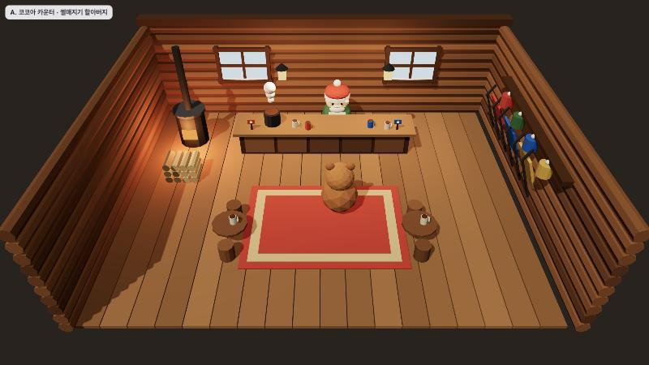
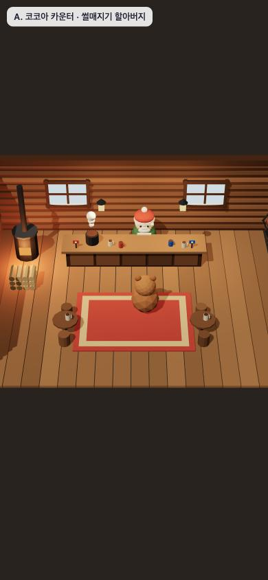
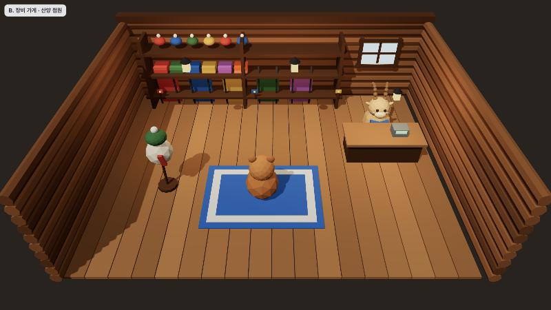
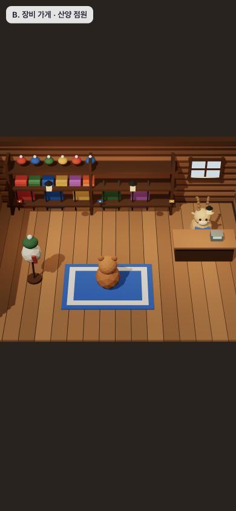
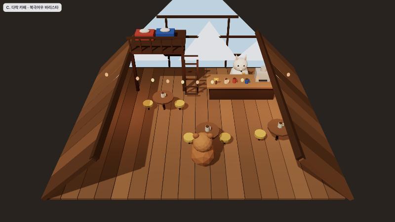
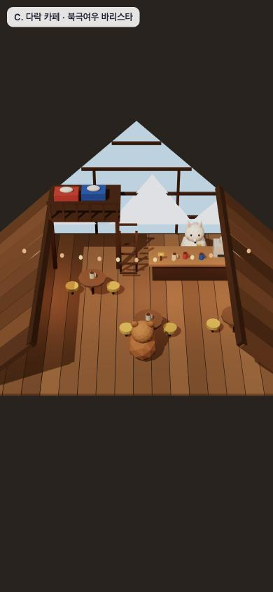

🏠 정상 산장 상점: 실내 · 점원 시안
산장 문으로 들어가는 작은 실내 공간입니다. 썰매 기록이 리더보드에 올라가므로 속도에 영향을 주는 물건(부스터 등)은 팔지 않고, 꾸미기 상품만 진열했습니다.
A 코코아 카운터
점원: 썰매지기 할아버지(밖에 서 있던 주민이 안으로 들어옴). 난로와 장작, 김 나는 코코아 냄비, 벽에 걸린 썰매 3대와 털모자 줄.
- 판매: 털모자 4색, 썰매 색, 코코아(손에 드는 연출)
- 분위기: 가장 아늑함, 서사와 바로 이어짐
PC

모바일

B 장비 가게
점원: 산양(뿔 달린 새 주민). 뒷벽 3단 선반에 썰매 5색, 목도리, 털모자가 진열되고, 마네킹이 목도리와 모자를 입고 있습니다.
- 판매: 썰매 스킨, 목도리, 털모자
- 분위기: 상점이라는 게 한눈에 보임
PC

모바일

C 다락 카페
점원: 북극여우 바리스타(새 주민). A자 지붕 속, 큰 유리 박공 너머로 설산이 보이고, 뒤쪽 다락에 침낭, 둥근 탁자와 전구 줄.
- 판매: 코코아·커피(연출), 기념품, 썰매 색
- 분위기: 밖에서 본 등불 산장과 같은 집, 밤에 가장 예쁨
PC

모바일
